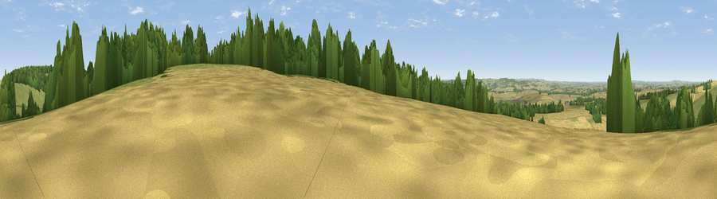

Viewpoint near Ipsden
#29779 in England · top 25% of its area beats it · near IpsdenWhere it is
The exact computed spot (SU 64875 84525). Click the marker for map links.
The view, rendered

A 360° render of this exact spot computed from the terrain model, tree cover and land cover — summer colours, afternoon light, calibrated against photographs of famous viewpoints. Real trees, hedges and buildings will differ in detail.
The panorama
Grey silhouette: terrain skyline in each direction (720 bearings, Earth curvature and refraction included). Dashed green: skyline with trees (+15 m) and buildings (+8 m) as obstacles. Blue strip: how far the ground is visible on each bearing.
Where the view opens
Wedge length = distance to the farthest visible ground on that bearing (vegetation-aware). Rings at 10, 25 and 50 km.
What fills the view
43% cropland · 33% grassland · 22% woodland ·
Angular shares of the visible panorama (visual magnitude), not map area. Landscape diversity 0.48 (0–1 Shannon).
Key numbers
More beautiful places nearby
The staircase of upgrades: each row has a higher view potential than everything closer. Driving times are estimates from straight-line distance, calibrated against real road routing — check an actual route before setting out.
| Place | Direction | Drive | Score |
|---|---|---|---|
| Viewpoint near Nuffield | N · 4 km | ~8 min | 48.4 |
| Viewpoint near Nuffield | NNE · 5 km | ~11 min | 62.3 |
| Viewpoint near Cookley Green | NNE · 7 km | ~15 min | 64.3 |
| Viewpoint near Cookley Green | NNE · 8 km | ~17 min | 68.5 |
| Viewpoint near Watlington | NNE · 10 km | ~20 min | 70.6 |
| Viewpoint near Lewknor | NNE · 13 km | ~24 min | 70.8 |
| Viewpoint near Lewknor | NNE · 15 km | ~27 min | 74.4 |
| Coombe Hill Monument | NE · 30 km | ~47 min | 75.5 |
51.55589, -1.06564 · source: screening · position refined by local search. Computed location — check access rights before visiting.